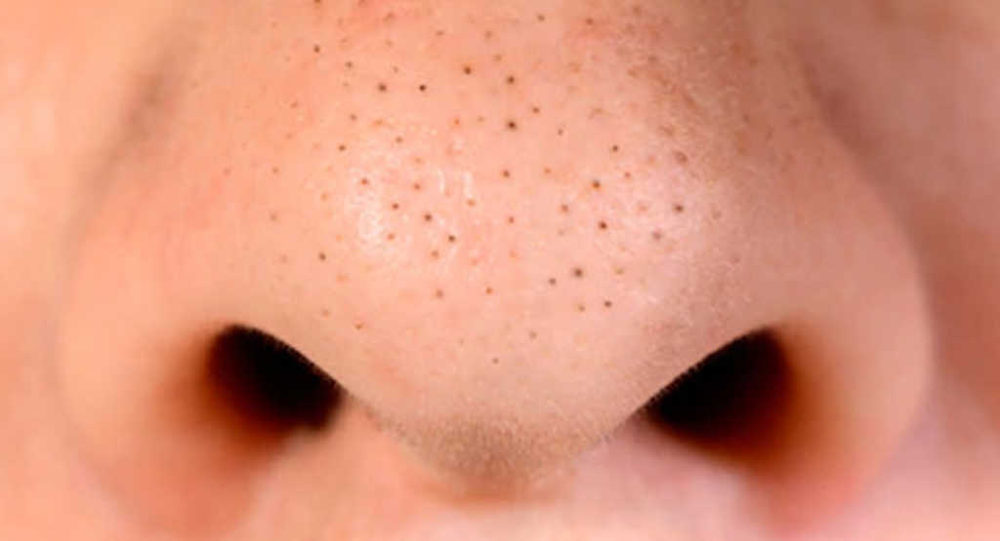

ဆားဝက်ခြံကို ဘယ်လိုဖယ်ရှားမလဲ

ဆားဝက်ခြံတွေကတော်တော်လေးကိုအလှပျက်စေတဲ့အရာတစ်ခုလို့ဆိုလို့ရပါတယ်။ မျက်နှာပေါ်မှာဆားဝက်ခြံတွေရှိနေရင် စိတ်ကသိကအောင့်ဖြစ်သလို အသားကိုယားယံတာမျိုးလည်းဖြစ်စေနိုင်ပါတယ်။ ဆားဝက်ခြံက အမျိုးသားရော အမျိုးသမီးတွေမှာပါဖြစ်တတ်ပါတယ်။ ဒီတစ်ခေါက်ကတော့ ဆားဝက်ခြံ ဘယ်လိုဖြစ်လာတာလဲဆိုတာကနေ စလို့ ဘယ်လိုလုပ်ရင် သက်သာစေမလဲဆိုတာအထိ ဖတ်မိသမျှကိုပြန်လည်ဝေမျှပေးချင်ပါတယ်။
ဆားဝက်ခြံဆိုတာ
နားလည်အလွယ်ဆုံးဖြစ်အောင်ပြောပြရရင် ဆားဝက်ခြံဆိုတာက မျက်နှာပေါ်ကချွေးပေါက်တွေထဲမှာ အဆီပိုတွေနဲ့ မျက်နှာအရေပြားပေါ်က ဆဲလ်သေတွေ ပိတ်ဆို့ရာကနေဖြစ်လာတဲ့အရာတွေပါ။ ဆားဝက်ခြံကလည်း ဝက်ခြံအမျိုးအစားတစ်ခုပါပဲ။ များသောအားဖြင့်ကတော့ မျက်နှာမှာအဖြစ်များပါတယ်။ကျော၊ ရင်ဘတ် နဲ့ ပုခုံးတွေမျာလည်း ဆားဝက်ခြံတွေဖြစ်တတ်ပါတယ်။ တချို့ဆိုရင် နားတွေထဲမှာတောင်ဖြစ်တာမျိုးတွေ့ဖူးပါတယ်။
ကဲ အိမ်မှာနေရင်း ဆားဝက်ခြံတွေကို ကုသမယ်...
ဆားဝက်ခြံဖယ်ရှားနိုင်မယ့် နည်းလမ်း ၃ ခု
- ကုသလို့ရတဲ့နည်းလမ်းကတော့ သကြားညို၊ ပျားရည်၊ ရှောက်သီး ဒါမှမဟုတ် သံပရိုသီး mixture ဖြစ်ပါတယ်။ သကြားညိုး (၁) ဇွန်း၊ ပျားရည် (၁) ဇွန်း၊ ရှောက်သီး ဒါမှမဟုတ် သံပရိုသီး (၂) ဇွန်းကို ရောစပ်ပြီး ဆားဝက်ခြံရှိတဲ့ နှားခေါင်းတို့၊ ပါးပေါ်တို့သုတ်လိမ်းပေးပါ။ (၅) မိနစ်လောက် နှိပ်နယ်ပြီးရင်တော့ ရေဆေးချလို့ရပါပြီ။
- နောက်ထပ်နည်းလမ်းတစ်ခုကတော့ နနွင်းဖြစ်ပါတယ်။ နနွင်းက လူတွေအတွက် ဆေးဖက်ဝင်တဲ့ပစ္စည်းတစ်ခုဆိုတာ လူတိုင်းသိပြီးသားပါ။ နနွင်းရယ်၊ ရေ ဒါမှမဟုတ် coconut oil ကိုရောစပ်ပြီး ဆားဝက်ခြံရှိတဲ့နေရာလေးတွေကို သုတ်လိမ်းပေးပါ။ ၁၀ မိနစ်၊ ၁၅ မိနစ်လောက် ထားပြီးရင်တော့ ရေဆေးချလို့ရပါပြီ။
- ဒီနည်းလမ်းလေးကလည်း လွယ်ကူတဲ့နည်းလမ်းလေးဖြစ်ပါတယ်။ ကြက်ဥတစ်လုံးကို အနှစ်ထုတ်ပြီး အကာကိုပဲ မွှေပါ။ ပျားရည်ထည့်ချင်လည်းရပါတယ်။ ပြီးရင် မျက်နှာပေါ်အုပ်ပြီး အခြောက်ခံပါ။ ပြီးရင် နောက်ထပ်တစ်လွှာအုပ်ပြီး အခြောက်ခံပါ။ မိနစ် (၂၀) လောက်ထားပြီးရင်တော့ ရေဆေးချလို့ရပါပြီ။
ဆားဝက်ခြံ သက်သာစေဖို့ လုပ်ဆောင်သင့်တဲ့ အလေ့အထများ
ဆားဝက်ခြံတွေကို မဆိတ်ဆွပါနဲ့ – လက်ချောင်းတွေနဲ့ ဆားဝက်ခြံတွေကို ညှစ်ထုတ်တာကချွေးပေါက်တွေကို ညစ်ပတ်တာတွေ နဲ့ ပိုးဝင်တာတွေဖြစ်စေနိုင်ပါတယ်။ ဆားဝက်ခြံတွေကို ဆိတ်ဆွတာက ပိုးဝင်ကူးစက်တာတွေကိုဖြစ်စေပြီး အရေပြားရောင်ရမ်းတာနဲ့ ဆားဝက်ခြံတွေကို ပိုဆိုးစေတာမျိုးတွေကိုဖြစ်စေနိုင်ပါတယ်။ အဆိုးဆုံးဖြစ်နိုင်တာတစ်ခုက မျက်နှာပေါ်မှာ အမာရွတ်တွေကျန်ခဲ့စေနိုင်တာပါ။
အပြင်းစား ဓာတုပစ္စည်းတွေပါဝင်နေတဲ့ ဆဲသေလ်ဖယ်ရှားတဲ့ အလှကုန်တွေမသုံးပါနဲ့ – တုံ့ပြန်လွယ်တဲ့အသားအရေပိုင်ဆိုင်ထား မယ်ဆိုရင် အပြင်းစား ဆဲသေလ်သေဖယ်ရှားပေးတဲ့ အသားအရေသုံးအလှကုန်တွေက ဆားဝက်ခြံကို ပိုဆိုးစေနိုင်တာ နဲ့ အရေပြားကျိန်းစပ်တာမျိုးတွေကိုဖြစ်စေနိုင်ပါတယ်။ လက်ရှိသုံးနေတဲ့ ဆဲလ်သေဖယ်ရှားတဲ့အသားအရေသုံးပစ္စည်းကိုအသုံးပြုတာကြောင့် အသားအရေမှာနာကျင်တာမျိုး ခံစားရမယ်ဆိုရင် ဆက်မသုံးဖို့ အကြံပြုပါရစေ။ ဓာတုပစ္စည်းပါဝင်မှုနည်းပြီး သဘာဝပစ္စည်းတွေကိုအခြေခံထားတဲ့ ဆဲလ်သေဖယ်ရှားပေးတဲ့ အသားအရေသုံးပစ္စည်းကိုပြောင်းသုံးပေးပါ။
တစ်နေ့နှစ်ကြိမ် မျက်နှာသစ်ပေးပါ –မနက်ပိုင်းမှာတစ်ကြိမ် ညမအိပ်ခင်တစ်ကြိမ် အနည်းဆုံး ၂ ကြိမ်တော့ မျက်နှာကိုသေသေချာချာသစ်ပေးပါ။ပြီးရင်တော့ မျက်နှာမှာ ဆားဝက်ခြံဖြစ်တာသက်သာစေဖို့ အစိုဓါတ်ထိန်းခရင်မ်တစ်မျိုးမျိုးလူးပေးဖို့ မမေ့ပါနဲ့။ မျက်နှာပေါ်မှာ အဆီများရင်ဆားဝက်ခြံပိုဖြစ်နိုင်တာကြောင့် ဖြစ်နိုင်ရင်ရေကိုအခြေခံပြီးထုတ်ထားတဲ့ အစိုဓါတ်ထိန်းခရင်မ်ကိုပဲ အသုံးပြုပေးပါ။
ခေါင်းအုံးစွပ်ကိုလျှော်ပေးပါ –ခေါင်းအုံးစွပ်မှာ အိပ်နေတဲ့အခါ မျက်နှာကနေ ထွက်လာတဲ့ အဆီတွေနဲ့ ဆဲလ်သေတွေကခေါင်းအုံးစွပ်မှာ ကပ်ညှိနေနိုင်တာကြောင့် အနည်းဆုံး တစ်ပတ်တစ်ကြိမ်တော့ခေါင်းအုံးစွပ်လဲပေးပါ။
မျက်နှာကို လက်နဲ့မထိပါနဲ့ –မျက်နှာပေါ်က ဆားဝက်ခြံတွေ၊ ဝက်ခြံတွေကို လက်နဲ့ထိတွေ့တာ၊ ဆိတ်ဆွတာတွေက လက်က ဘက်တီးရီးယားတွေကို မျက်နှာပေါ်ကိုကူးစက်တာမျိုးတွေကိုဖြစ်ပေါ်စေပြီး ဝက်ခြံတွေကိုပိုမိုဖြစ်စေနိုင်ပါတယ်။ ခန္ဓာကိုယ်အစိတ်အပိုင်းတွေထဲမှာ လက်ကအညစ်ပတ်ဆုံး အစိတ်အပိုင်းတွေဖြစ်နေတတ်ပြီး ဆားဝက်ခြံတွေကိုဖြစ်စေရတဲ့အကြောင်းအရင်းတွေထဲက တစ်ခုလည်းဖြစ်ပါတယ်။ မျက်နှာကိုလက်နဲ့မကြာခဏထိတွေ့တာမျိုးကိုရှောင်ပါ။ မလိုအပ်ဘဲမျက်နှာကို လက်နဲ့မကိုင်ပါနဲ့။
ဒီနည်းလေးတွေအတိုင်း လိုက်လုပ်ကြည့်ရင်း စိတ်အနှောင့်အယှက်ဖြစ်စေတဲ့အပြင် လှပမှုကိုပါထိခိုက်စေတဲ့ ဆားဝက်ခြံလေးတွေကို ဘိုင့်ဘိုင်လို့ နှုတ်ဆက်လိုက်ကြရအောင်ပါ။